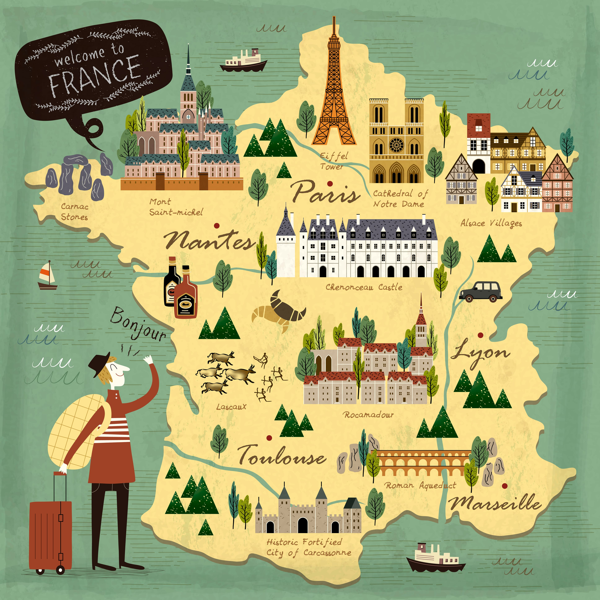
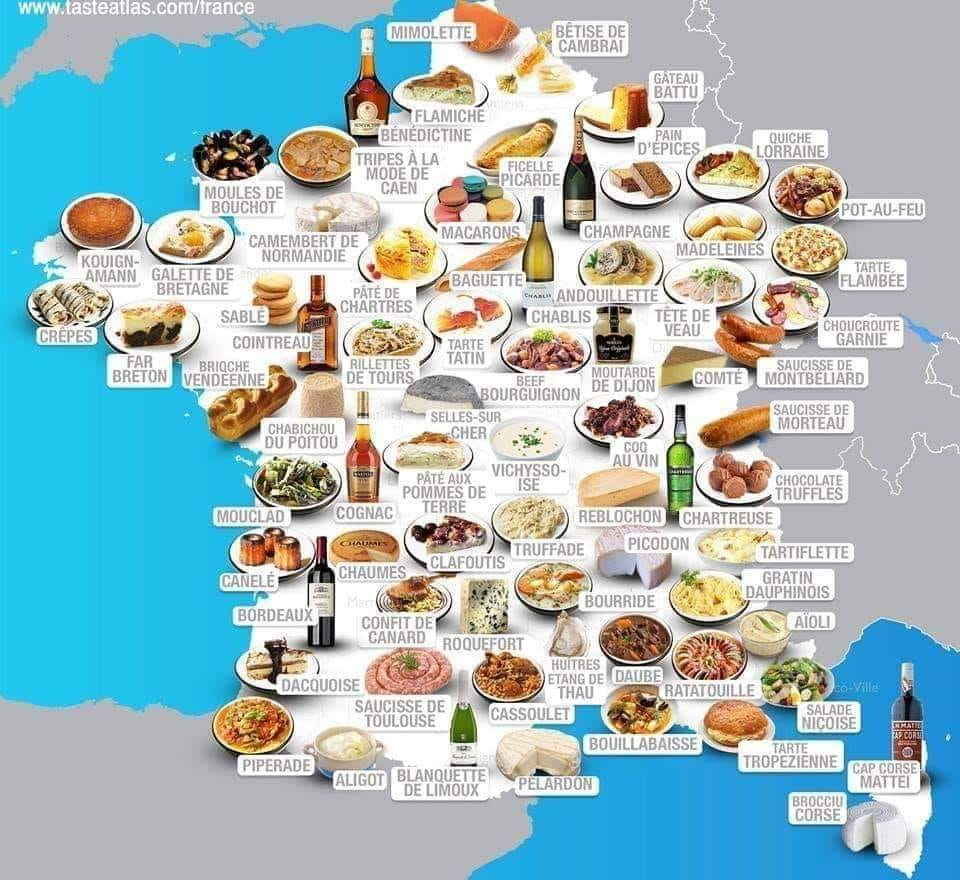

La France
Les Lieux à visités
Les différents lieux presentés dans la video ci-dessus ne sont pas les seules il faut se fixer une listes des différents monuments qui pourrait nous interessé afin de savoir dans quelle ville nous dirigé.
La Gastronomie Francaise
La France est mondialement reconnue pour sa gastronomie et son art de vivre. Depuis 2010, le repas gastronomique à la française et ses rituels sont inscrits au patrimoine culturel immatériel de l’UNESCO. Cette attention particulière aux plaisirs de la table se retrouve dans la vie de tous les jours. Les Français sont très attachés aux trois repas de la journée. Traditionnellement, le petit-déjeuner se prend au réveil, le déjeuner vers 13 heures et le dîner vers 20 heures.
Les activités à faire
La France posséde un nombre impréssionnant d'activités que l'on peut réaliser car il y à une diversité de paysage et relief qui permettent de profiter de montagne de plage , de monument et de villes diverses et variées le carte ci dessous: